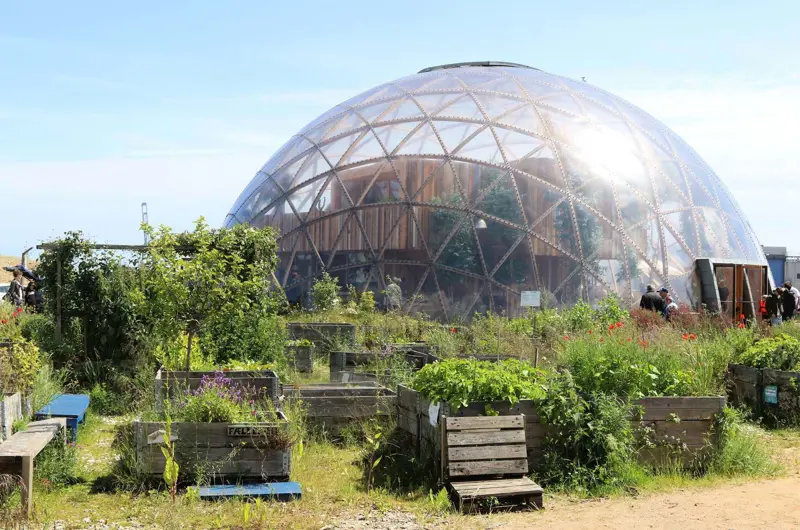
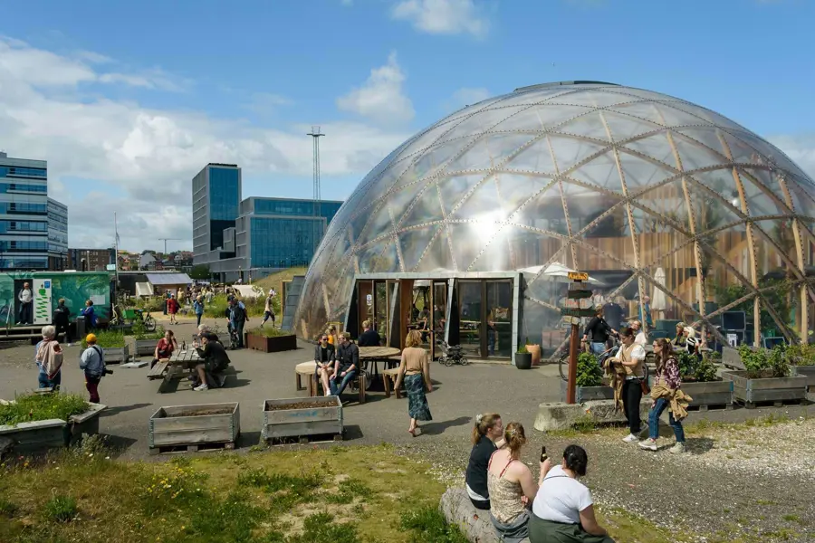
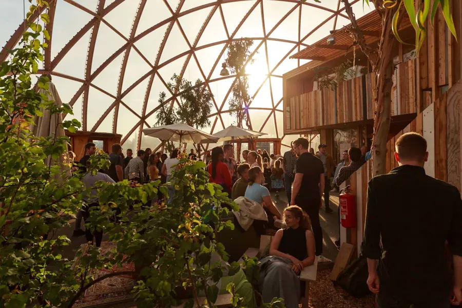
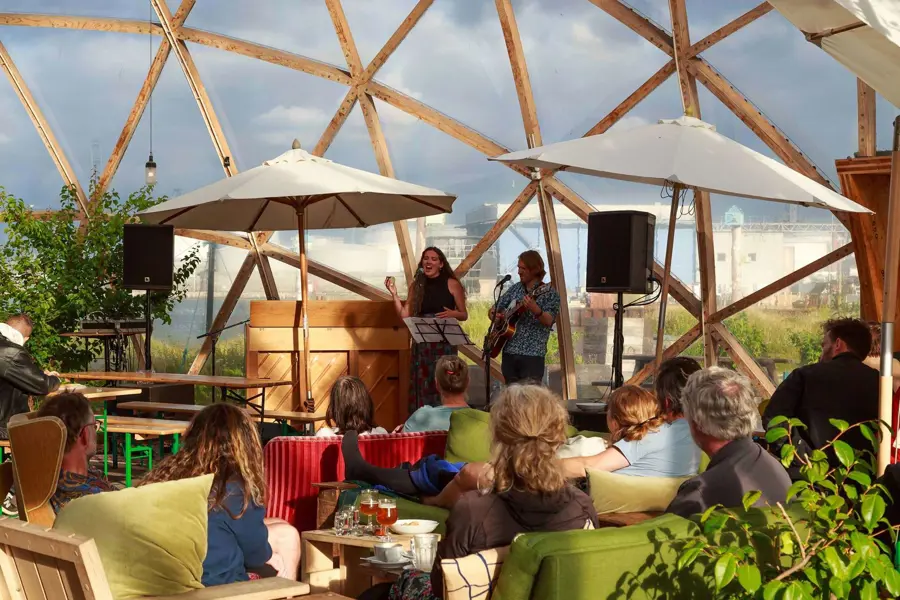
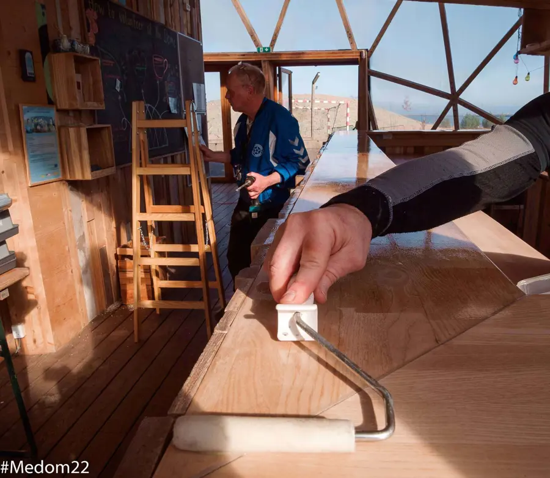
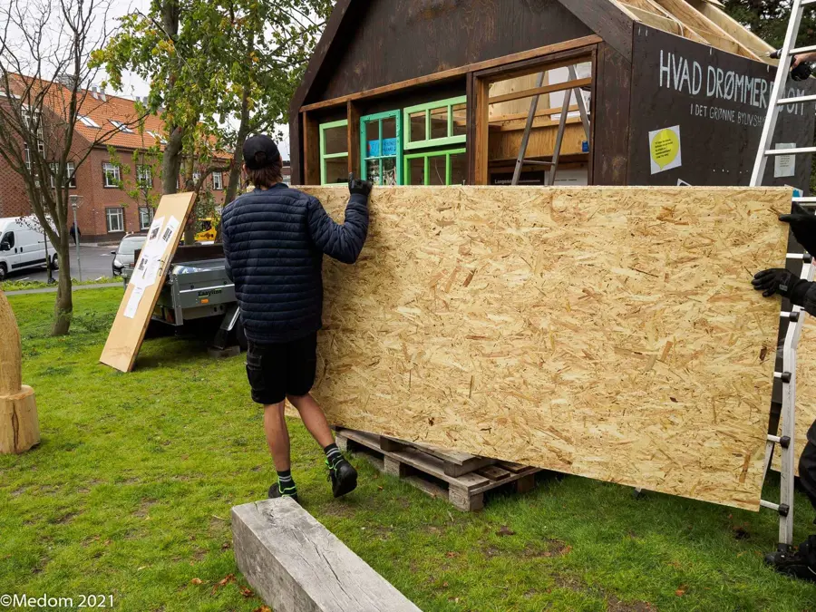
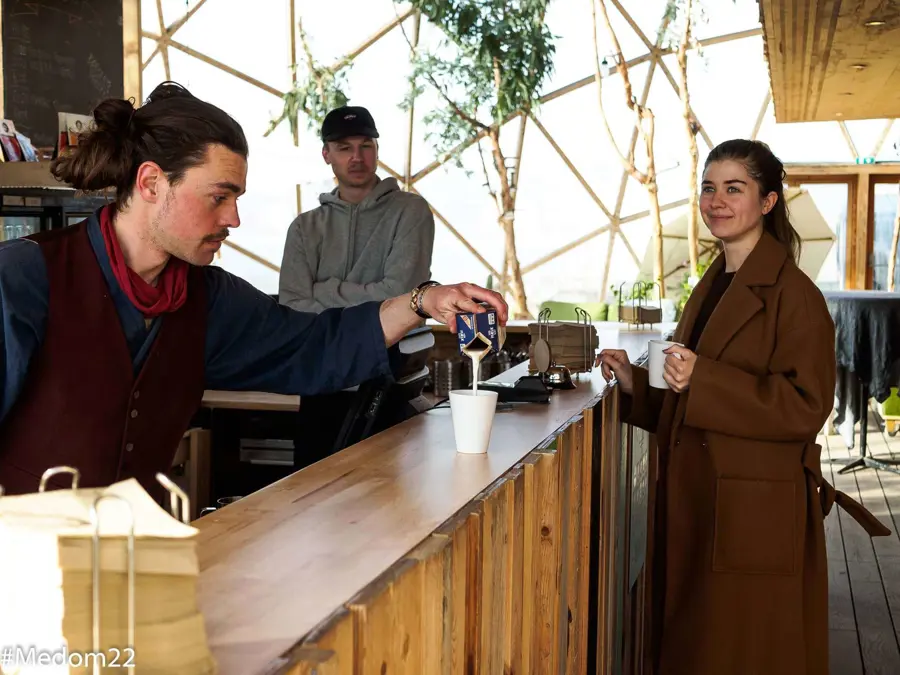

Om Domen
Domen er et vartegn på Aarhus Havnefront og et symbol på blandt andet innovation, medborgerskab og grøn omstilling i Aarhus Kommune.

Domen er et bylivshus med kig til himmel og hav. Det ligger på det yderste af Pier 2 i den midlertidige bypark. I 2018 overtog Innovation og Medborgerskab Domen, på vegne af Aarhus Kommune, for at kunne stille et uformelt, inspirerende og bæredygtigt mødested til rådighed for både borgere, foreninger og erhvervsliv.
Alle initiativer og aktiviteter, som afholdes i Domen, understøtter medborgerskab, bæredygtighed og fællesskab. Domens 450 kvadratmeter, fordelt på to niveauer, giver plads til både en klimacafé og bar, kontorpladser, scene og konferencesal, som kan huse omkring 150 mennesker, og en masse grønne planter, der stortrives i det fantastiske lys, og som tilsammen skaber en helt særlig atmosfære.

Domen kan bookes og benyttes af alle, både borgere, foreninger, virksomheder og Aarhus Kommune, og det benyttes flittigt. Særligt i sommerhalvåret er Domens kalender fyldt op med spændende debatter, seminarer, kurser, skolebesøg og officielle delegationsbesøg men også skiftende kunstudstillinger, koncerter, dans, fællesspisning og meget andet.
Alt hvad der sælges i Domens café er med fokus på økologi og bæredygtighed. Klimacaféen sætter for eksempel fokus på FN´s Verdensmål igennem salg af vores 17 forskellige Verdensmåls-is, som er udviklet i samarbejde med Skarø Is. Ud over at være et bæredygtigt is-valg, formidles verdensmålene i en pixi-folder sammen med isene. Alt inventar i Domen er også valgt med øje for bæredygtighed og cirkulær økonomi. Lige fra sæben på toiletterne til genbrug af inventar i mødelokaler og særligt byggede borde og bænke i genbrugstræ i Domens café.

Den lokale klimaindsats i Aarhus formidles også udenfor kommunens grænser, ved f.eks. at byde mange internationale delegationer velkommen. Uanset hvilket land eller fagområde delegationerne kommer fra, udviser de ofte en stor interesse for Domen, og de værdier og muligheder, som er knyttet til den. De afslappede og inviterende rammer er derfor jævnligt basis for konstruktiv, international erfaringsudveksling.
Sekretariatet for Klima og Grøn Omstilling i Aarhus Kommune er derfor også involveret i Domen, og de er altid åbne for dialog omkring potentielle projektmuligheder, idéer og spørgsmål. Se mere på https://gogreenwithaarhus.dk/

Aarhus Kommune har sat rammerne for Domen, men alt drives i et fællesskab af både ansatte og frivillige. I Domen er det for eksempel borgere, der passer planterne, borgere, som er frivillige og hjælper til i cafeen, og det er som udgangspunkt også borgere, som arrangerer og deltager i mange af de aktiviteter, der foregår i Domen. Alt sammen understøtter det Aarhus Målene om: en by med brug for alle og en by med fællesskab og medborgerskab.
I Innovation og Medborgerskab gentænker vi også måden, vi ”taxi’er” folk ind på arbejdsmarkedet. Vi arbejder for, at alle aarhusborgere oplever sig som en del af fællesskabet, også dem, der er på kanten af arbejdsmarkedet, eller som har stået helt udenfor i rigtig lang tid. Det gør vi ved at udvikle og teste nyde måder, hvorpå vi især i regi af Domen kan hjælpe ledige borgere ind og blive en del af vores arbejdsfællesskaber. Vi kalder det bylivsjob.

I Domen og de andre bylivshusene kan vi stille nogle særlige rammer til rådighed, og der er en helt særlig atmosfære omkring husene. Man kan være der som ansat i Innovation og Medborgerskab, i et afklaringsforløb, som frivillig engageret borger eller som gæst. Men man kan ikke se forskel på os, og alle har en plads og en vigtig funktion at udfylde. Her bliver forskellighed set som en styrke, og der er mulighed og rum til det meste.


Erfaringerne fra bylivsjob har vist, at et forløb i bylivshusregi generelt er en effektiv trædesten til at komme i job, til at blive afklaret om, hvad borgeren gerne vil og kan, og til at få nye kompetencer på CV’et. Og lige så vigtigt, så styrker dét at indgå i et arbejdsfællesskab borgerens sociale kompetencer og generelle velbefindende, hvilket også er forudsætning for at trives og lykkes med det, man sætter sig for.
Takket være Trygfonden kan vi i bylivshusregi i dag arbejde med kompetenceudvikling, beskæftigelse, bæredygtighed og:
- Hjælpe borgere på kanten i job
- Taxie borgere ind i fællesskaber der styrker selvtillid og empowerment
- Polstre borgeres CV'er med nye kompetencer og viden
- Forebygge ensomhed og øge mental sundhed
- Styrke lokalt engement, demokrati og deltagelse
Jeg har en baggrund inden for antropologi og journalistik. Min interesse for planter, bæredygtighed og grønne fællesskaber trak mig til Domen, hvor jeg har fungeret som teamkoordinator og gartner siden 2022.
Min interesse for planter blev tændt, da jeg for nogle år siden arbejdede frivilligt på økologiske landbrug og gartnerier i Storbritannien og New Zealand. Det var egentlig tænkt som en billig måde at komme ud at rejse på. Men jeg opdagede også, hvor godt det er for krop og sind at arbejde med planter – og blev nysgerrig på at lære mere om dyrkningen af dem.
Min forgænger, Christina, har gennem flere år arbejdet dedikeret på at passe planterne i Domen og på at føje nye arter til samlingen. Resultatet er et grønt, frodigt og varieret miljø, som jeg føler en stor forpligtigelse i forhold til at vedligeholde.
For mig er hver arbejdsdag i Domen en skoledag, da jeg ikke er uddannet gartner og stadig har masser at lære. Jeg elsker muligheden for hele tiden at lære nyt – og planterne holder mig på tæerne ved at sladre om det, så snart der er noget, der generer dem.
Domens planteteam er meget vigtigt for mig. Hjælpen til praktiske opgaver og den udveksling af idéer og viden, der foregår mellem os i planteteamet, er guld værd. Og så er det superhyggeligt at være sammen om at passe planterne og udvikle nye projekter.
Om Planteteamet
Planteteamet er en gruppe frivillige, der passer planterne i Domen og holder events med plantetema.
I planteteamet dyrker vi glæden ved planter og deler plantetips – både med hinanden og med andre, når vi afholder arrangementer med plantetema.
Alle, der har interesse for planter og har lyst til at dele glæden ved at få ting til at gro, kan blive medlem af planteteamet.
Vores events er altid gratis og har gerne et bæredygtigt element. Vi holder for eksempel stiklinge-bytte-dage, hvor man kan komme med aflæggere af sine egne potteplanter og bytte med andres stiklinger (lidt som dengang vi byttede Pokémon-kort i skolegården). Vi har også holdt workshops, hvor man fx har kunnet lære at folde spirepotter af genanvendt avispapir, eller få tips til, hvordan man holder liv i sine krydderurter hjemme i vindueskarmen.
Da flere af os på planteteamet har en interesse for tegning, holder vi også jævnligt plantecroquis, hvor planterne ”står model” for vores gæster, som selv medbringer papir og tegneredskaber.
Domen er tegnet af arkitekt Kristoffer Tejlgaard og bygget af entreprenørvirksomheden NCC i samarbejde med Aarhus Kommune. Den er et forsøg på at bruge træ og klimaskærm til bæredygtigt byggeri og materialeforbrug. Konstruktionen er i tanke og handling et eksperiment med nye former for teknologier, processer, materialer og løsninger på fremtidens problemer indenfor miljø og byudvikling.
Vi gør opmærksomme på, at domen er som et drivhus. Temperaturen indvendigt hænger tæt sammen med den udvendige temperatur. Underforstået; skinner solen, bliver det varmt
Fysisk er Domen som den står i dag en videreførelse og forbedring af to tidligere Domes 1.0 og 2.0. Vil du læse mere om disse to og den nuværende dome, så tryk på linket her:
Domen 0.3